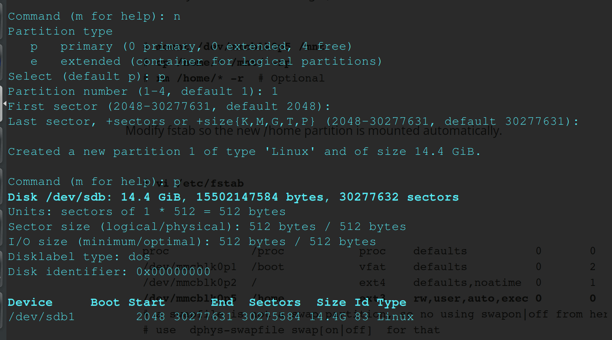
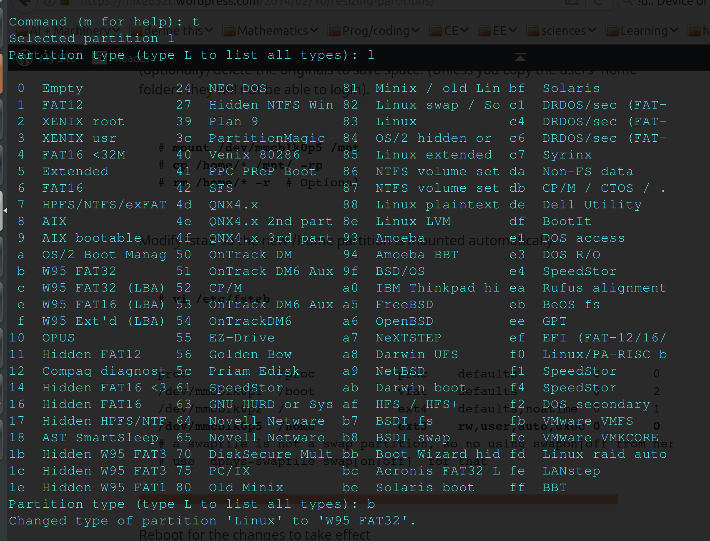

[8.18.17]
Laminar Pi + Airplay
Now that I got the Raspberry Pi 3, I could rework the tech and figure out the Airplay feature to get this fountain working!
Here are the steps I used to set up my Raspi (SD card), install Lightshow Pi, and shairport-sync (airplay feature) on top of it:
I'd never reformatted an SD card before, so this was quite the experience.
The first step was to find a guide, and this website was very helpful.
I slipped the microSD card into my microSD card reader and plugged it into my computer, which recognized the device. (yay!)
I had to find what my computer named the usb
microSD though, so in root permissions, I ran fdisk -l,
which gave me this:
I knew my microSD was 16GB, so the second to last option, /dev/sdb,
was the right one.
Next I needed to actually access it, so I did that with fdisk
/dev/sdb. That command has to be run with root permission,
or sudo.
You need to delete any existing partitions on the device if there
were any before doing anything else. You can do that using d,
which will automatically delete the default partition.
To list all the partitions you have, you can use p,
which is useful to check what you've deleted.
After deleting the partitions, n will create the new
partition we need! You can give it a number (1-4) based on your
preference (if you have a favorite number or something).

Using p after creating the partition shows me the new
partition at the very bottom. But uh oh, I need a FAT32 type,
instead of a Linux type of partition.
To change that, you use the t command. If you request
so, you can list all the different types of partitions there are to
choose.

The tutorial I used recommended W95 FAT32 (all on its own, no LBA),
so I executed b, which reformatted it. Yay!
At the end of all that, you use w to write all the
progress and finish the dealio.
The first time I did all that, I got an error in the terminal about
“invalid argument, kernel is using the old partition table until you
reboot” or something, but after some fiddling with the commands it
gave me the right thing.
(EDIT [09-19-17] ~ to get rid of the error, you need to run `fdisk` on the home device, not the partition. So instead of running “fdisk /dev/sdb1”, you should run “fdisk /dev/sdb”, because sdb1 is a partition.)
Next, I needed to install Raspbian, the Raspberry Pi OS. I downloaded the full version of Raspbian Jessie Desktop from the Raspberry Pi website and unzipped it.
Next thing I did was run df -h, which helped me see
the device name of my SD card (it was still /dev/sdb).
Then I unmounted the SD card (so files can't be read or written in
the process of downloading an image) with umount /dev/sdb.
If you still have multiple partitions, you should unmount all of
them.
Next, use the terminal to copy the image to the SD card!
dd bs=1M
if=/home/thallia/Desktop/2017-05-17-raspbian-jessie.img
of=/dev/sdb
This command must be prefixed by sudo if you are not
logged in as root. dd starts the copying, bs=1M
tells the copyer what rate the memory should be transferred at.
The if= statement is where you put the path for where
the image can be found. For me, it was on my desktop. The of=
statement is the path of your SD card. It takes a few minutes for
the process to complete, so getting up and stretching for a few
minutes is a good thing to do while you wait for it to finish.
After that, your SD card should be ready to plug into your Raspberry Pi to boot!
~~~~~~~~~~~~~~~~~~~~~~~~~~~~~~~~~~~~~~~~~~~~~~~~~~~~~~~~~~~~~~~~~~~~~~~~~~~~~
Because I covered most of this in another post, I'll keep it short so we can get to shairport-sync.
Boot into your Raspberry Pi, open a terminal, and run sudo
apt-get update and sudo apt-get upgrade.
These shouldn't take too long.
After that, if you don't have git, install it with sudo
apt-get install git-core.
Next, clone the LightshowPi repository to your home directory.
git clone
https://togiles@bitbucket.org/togiles/lightshowpi.git
If you have a Raspberry Pi 3 (like me) or a Pi Zero, there's a
different repository you have to clone because of some kernel
issues. Here's the instruction:
git clone
https://broken2048@bitbucket.org/broken2048/lightshowpi-fork1.git
If you don't have a Pi 3 or Zero, then don't worry about that.
You'll want to make sure that you have the right branch, otherwise
the program won't work as well. You can do that with cd
lightshowpi, then git fetch && git checkout
stable.
You should get a confirming message that you've been moved to the "stable" branch.
Finally, you can install the software! sudo ./install.sh
will set you up with the goods. This process may take anywhere from
10 minutes to 3hrs, so be patient. After that, reboot your Pi with sudo
reboot.
On the LightshowPi website, you can find links for how to set up and test your
hardware, or you can check out my first setup here: LightShow
Pi ~ Early Tech Behind the Laminar Fountain.
If you have any questions about my setup or how I got the music to
work, feel free to contact me.
~~~~~~~~~~~~~~~~~~~~~~~~~~~~~~~~~~~~~~~~~~~~~~~~~~~~~~~~~~~~~~~~~~~~~~~~~~
Alrighty, now to the exciting stuff! I discovered shairport-sync through the LightshowPi Google+ Community, which is a very helpful place if you run into trouble setting up any of this stuff.
Here you can find the GitHub repository for shairport-sync and follow the instructions to set it up. I'll walk you through what I did to set mine up.
First, you have to make sure you install all of the files and packages needed for it to work. This includes (for my setup):
sudo apt-get install build-essential git xmltoman
sudo apt-get install autoconf automake libtool libdaemon-dev
libpopt-dev libconfig-dev
sudo apt-get install libasound2-dev
sudo apt-get install avahi-daemon libavahi-client-dev
sudo apt-get install libssl-dev
Next, you need to clone the repository to your Pi, using:
git clone https://github.com/mikebrady/shairport-sync.git
Now, cd into shairport-sync and run autoconf
-i -f. This step may take a little time.
This next part was a little tricky for me to understand what was going on. We're writing the configuration file with the stuff we want so shairport will work the right way. Because I'm only using shairport-sync for a simple technology, I didn't have to use many configurations.
./configure --sysconfdir=/etc --with-alsa --with-avahi
--with-ssl=openssl --with-systemd --with-stdout
./configure is the filename, I believe, while --sysconfdir=/etc
is where the file will be within the shairport directory.
--with-alsa [includes the ALSA backend module to audio
to be output through the Advanced Linux Sound Architecture (ALSA)
system directly. This is recommended for highest quality.] (taken
from the github description)
--with-avahi [Avahi is a widely-used system-wide
zero-configuration networking (zeroconf) service — it may already be
in your system.]
--with-ssl=openssl [for encryption and related
utilities using either OpenSSL, mbed TLS or PolarSSL.]
--with-systemd this command has to do with the
particular system you have. You can use man init to
find out whether you need to use systemd or systemv.
--with-stdout [include an optional backend module to
enable raw audio to be output through standard output (stdout).]
After executing that command, you can run make. When
make is finished, install shairport-sync with sudo make
install. This can take a little time as well, so get up and
stretch!
Now comes some more fun. We're going to edit some more
configuration files, first from the shairport-sync repository. Make
sure you cd into shairport-sync so you can access
them.
First, we're going to run sudo nano /etc/shairport-sync.conf.
There will be a lot of text. Do not freak out like I
did and immediately close the document.
As long as you can find the general function at the
top and the alsa function in the middle of the file,
you should be fine. In the general function, you'll see a list of
commented out functions. You can give your Airplay feature a
password if you don't want anyone out of the blue using it, but I
didn't set that up.
At the top of the file, there's a line that looks like: #
name "%H"
You'll want to erase the hash, and fill in the quotation marks what
name you want to appear on the Airplay menu. I named mine "Laminar
Pi", for the fountain purposes.
Now go down to the alsa function, and find the line
in the file that reads # output device: "hw:"
In this line, you can choose whether you want the output sound to
be HDMI, or headphones. I made mine headphones, because I have a
3.5mm jack connected from the Pi to a portable bluetooth speaker. It
makes for easy sound testing. Remember to delete the hash so it's
used in the setup.
That's all I modified in the shairport-sync config file, but if you
find yourself in a more complicated situation, the github
instructions have plenty of information and examples for you to
figure it out.
To save the config file, Ctrl-x will do the job, y
to agree to save the file, and enter to seal the deal.
Working with the pi, there's a special thing you can add to the
Raspberry Pi boot file to make the sound clearer. To get to that,
enter sudo nano /boot/config.txt.
At the very bottom of that file, add the line: audio_pwn_mode=2
Ctrl-x will save and get you outta there, and that
section of shairport-sync is finished! Only a few more steps left to
go.
Now, cd into your lightshowpi
directory, then into the config directory. The path
looks like this: cd lightshowpi/config
Next, run sudo nano defaults.cfg
This is the configuration file for LightshowPi, where we can alter
how things will outpstrut and work together.
If you scroll down past the information about the GPIO pins, shortly
after you'll come to a section about playlist modes. You can skip a
little farther down to the stream-in section.
There's a line that looks like this: # mode = stream-in
You'll want to uncomment that (delete the hash). Go down a few lines
to:
stream_command_string = sudo mpg123 --stdout
http://193.34.51.115:80 And put a hash in front of it to
comment it out. Then go down a few more lines to:
# stream_command_string = shairport-sync -v -o stdout
And uncomment (delete the hash) to activate shairport-sync.
Use Ctrl-x to save the file and exit nano, and you
should be ready to start up the hardware!
Assuming you've set up and tested your hardware,
cd .. out of the config directory, but
stay in the LightshowPi directory.
To start the software and give off the Airplay signal, run:
sudo python py/synchronized_lights.py
Hook your phone up to the Pi Airplay signal, and your lights should
start up to whatever sound you play through your phone!
Please contact me if you have any questions.
Cheers!
{thallia}